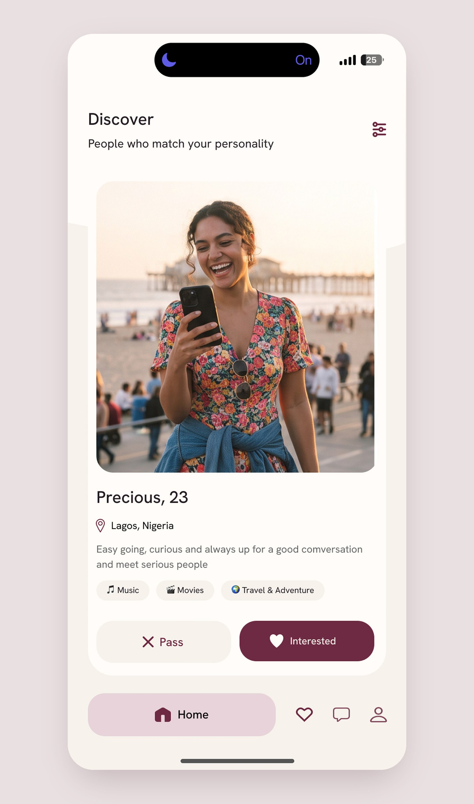

01
Pass or Interested, not a swipe
Two labelled buttons make each choice feel quicker and calmer. You read the card, then give one clear answer. “Interested” says you’d like to talk, not that you’re rating someone.
Answers: less volume, more fit